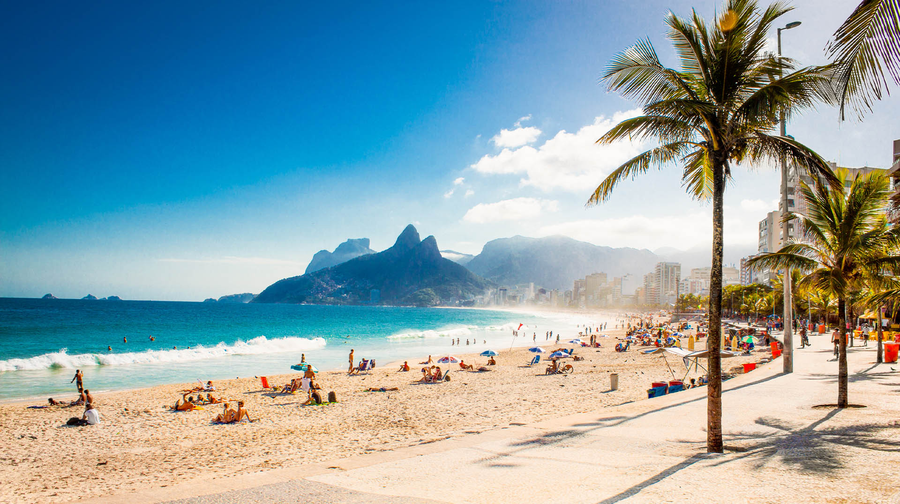

Monumento
Cristo Redentor
Um dos maiores símbolos do Brasil, localizado no alto do Corcovado. É uma parada obrigatória para quem visita a cidade.
Praias famosas, paisagens naturais, cultura vibrante e pontos turísticos que fazem do Rio um dos destinos mais encantadores do Brasil.
Explorar atraçõesO Rio de Janeiro é conhecido mundialmente por sua beleza natural, sua energia única e seus cartões-postais. Entre o mar e as montanhas, a cidade oferece experiências perfeitas para quem busca lazer, cultura, aventura e paisagens de tirar o fôlego.

O Rio reúne lugares históricos, praias mundialmente conhecidas e mirantes com algumas das vistas mais bonitas do país.
Um dos maiores símbolos do Brasil, localizado no alto do Corcovado. É uma parada obrigatória para quem visita a cidade.
O famoso bondinho leva os visitantes a uma das vistas mais marcantes da Baía de Guanabara e da cidade.

Uma das praias mais famosas do mundo, com calçadão icônico, quiosques, movimento e uma atmosfera tipicamente carioca.